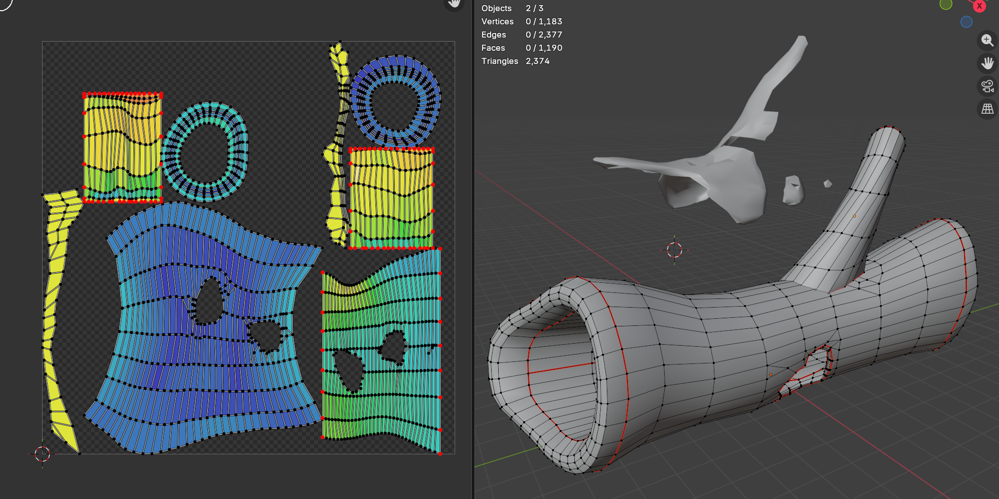
Hollowed Log: Created for the project Bugshroom, this asset highlights my modeling workflow focusing on texel density and UV layout. I prioritized seamless transitions across UV shells to ensure high-fidelity visual quality in real-time simulation environments.
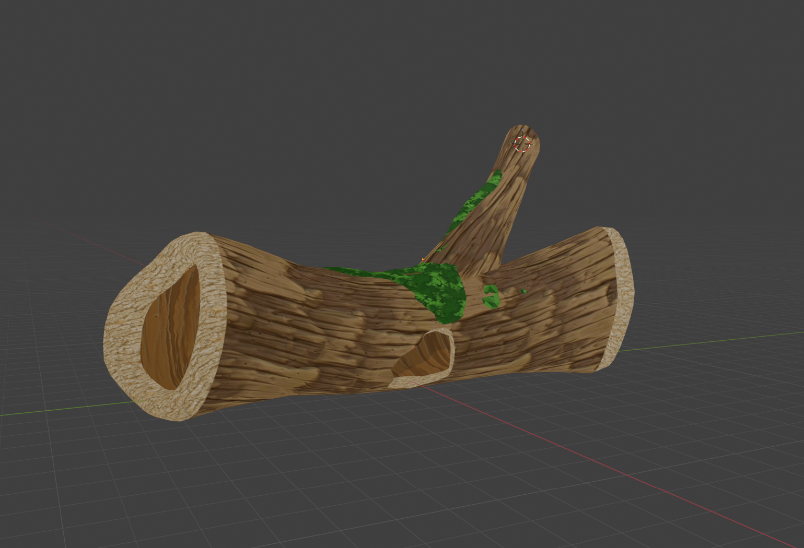
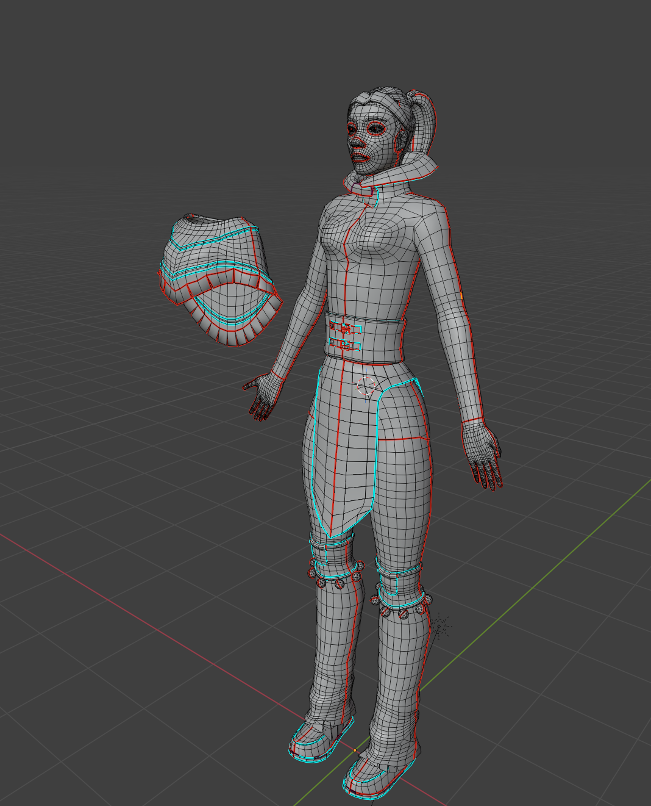
Cowgirl: A study in character modeling and technical rigging. I implemented industry-standard topology to ensure proper joint deformation and optimized the asset by removing occluded geometry—maintaining a strict triangle budget without sacrificing silhouette quality.
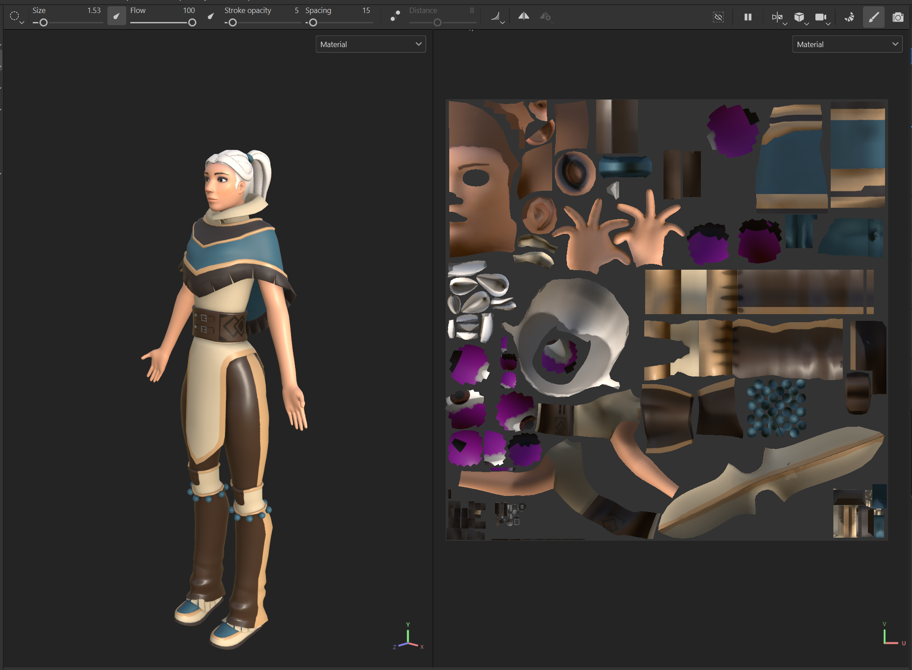
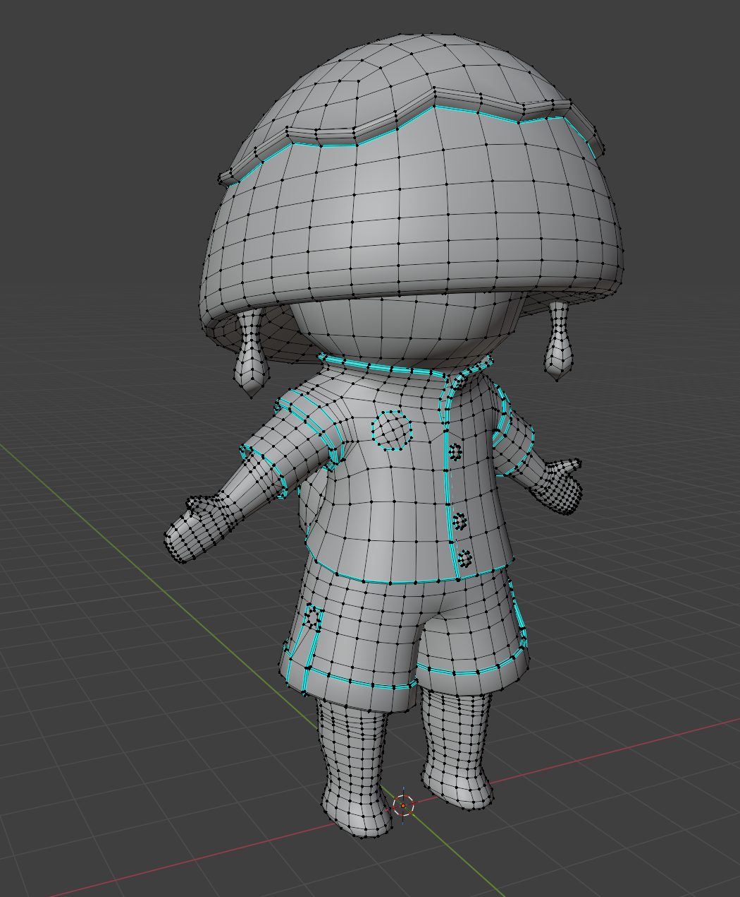
Inkcap: A playable character asset for Bugshroom. This project focused on low-poly optimization and loop-reduction for animation. I utilized vertex coloring and optimized topology to ensure the asset performed reliably across different runtime environments.
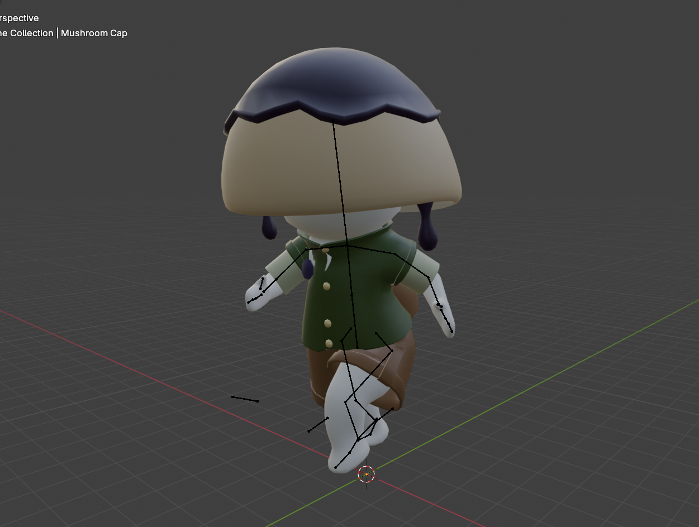
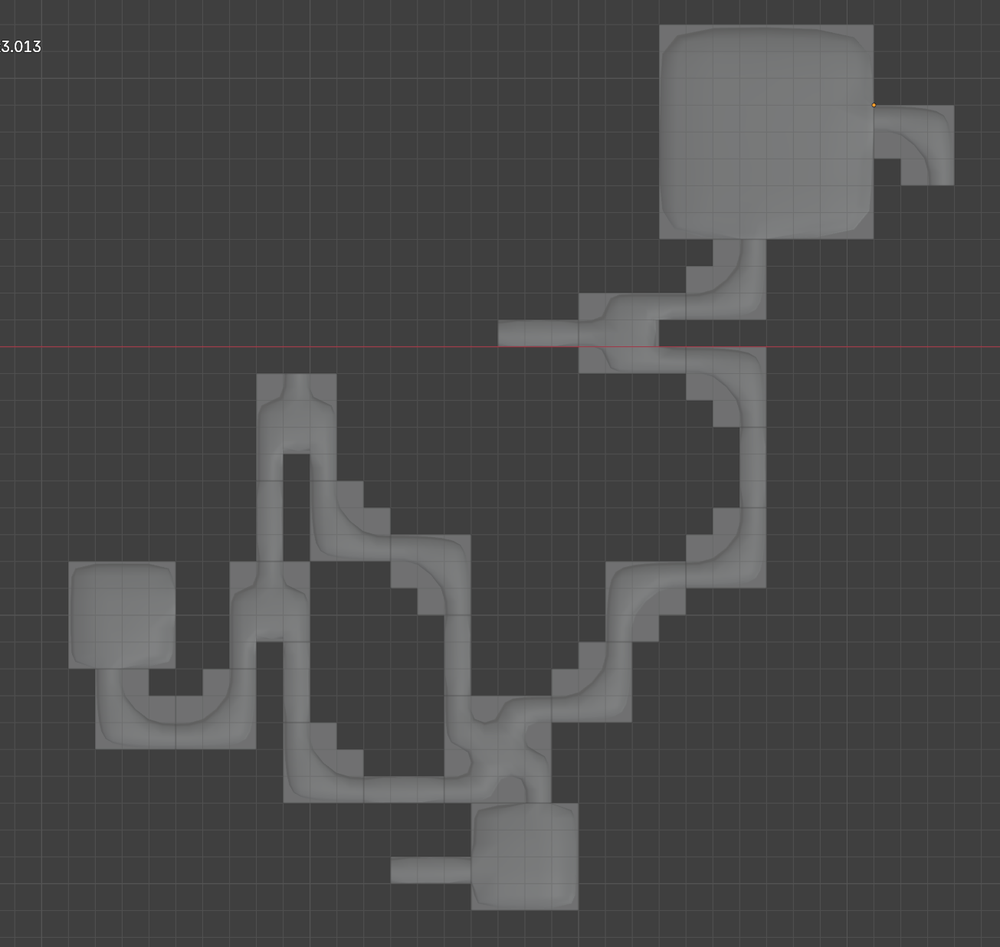
AntHill Modular Kit: An exercise in world building and modularity. Pieces were standardized on a 10m grid to streamline the environment pipeline, ensuring all assets align perfectly within the level-design hierarchy and maintain consistent scale accuracy.
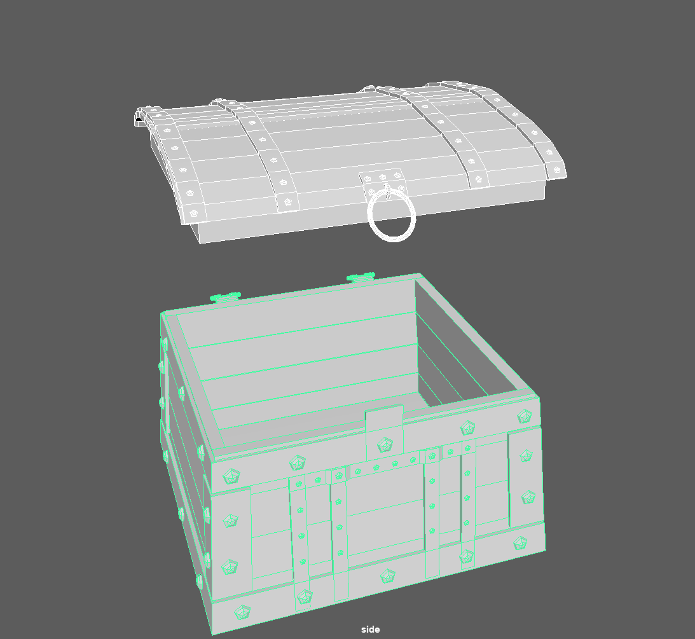
Nordic Chest: Modeled in Maya, this asset showcases a high-to-low poly baking workflow. I utilized Substance Painter for material editing and validated the final asset within Unreal Engine to verify shader parameters and lighting quality.
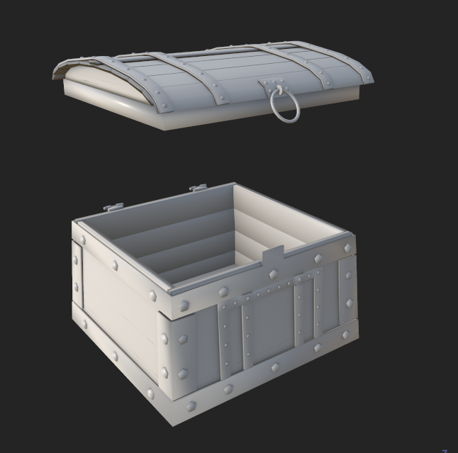
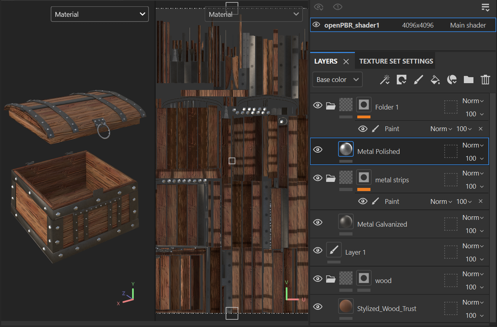
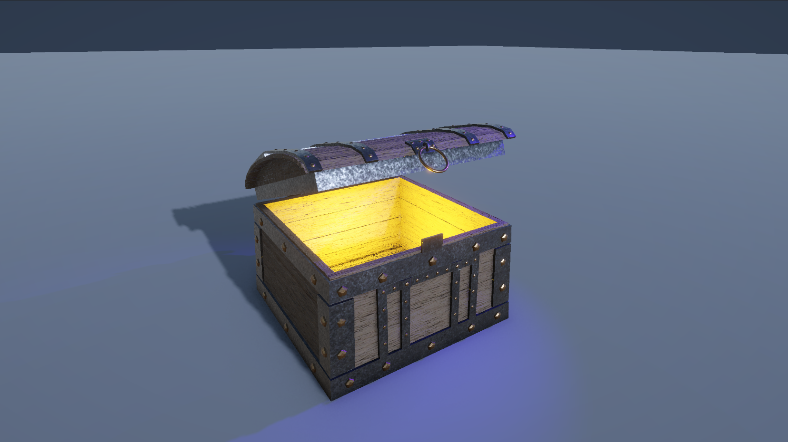

Gothic Mansion (WIP): My most ambitious architectural asset, focusing on advanced content pipelines. This piece uses trim sheets and custom procedural materials created in Substance Designer to achieve high-fidelity detail on an optimized mesh.

Banana Slug: An organic model study focusing on subsurface scattering and material properties. I developed a clean topology to support fluid deformation and high-quality visual performance in 3D viewers and engines.

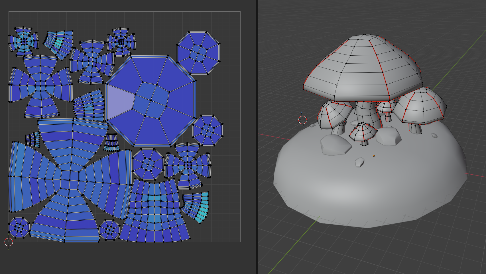
GlowShroom: A simulation-ready checkpoint asset. To optimize the asset management and rendering performance, I packed multiple environmental elements into a single 0-1 UV space to minimize draw calls.
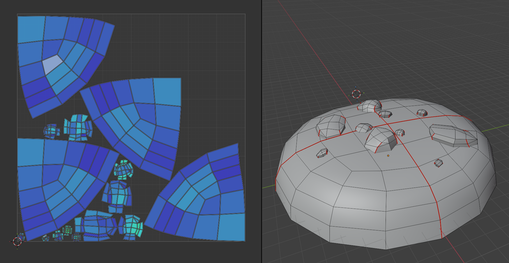